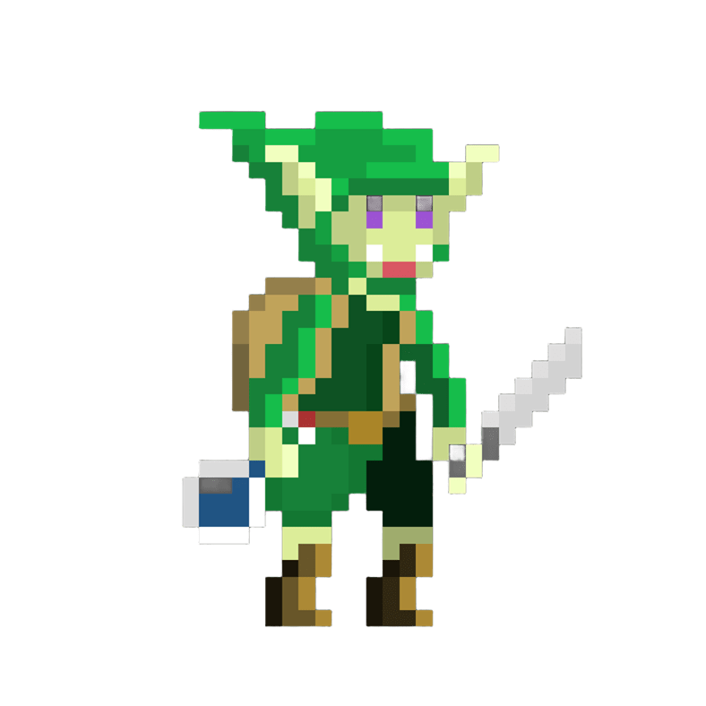
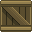
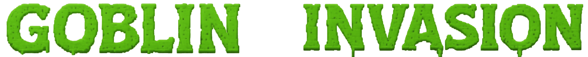

◆Sistema de peso
Cada obstáculo y enemigo tiene un peso: hacen falta tantos goblins como su peso para apartarlo. Si chocas, pierdes esa misma cantidad de goblins.



Cansado de ser el enemigo más débil de la mazmorra, un goblin decide reunir a los suyos y formar una ola de goblins imparable para convertirse en el boss de la mazmorra.